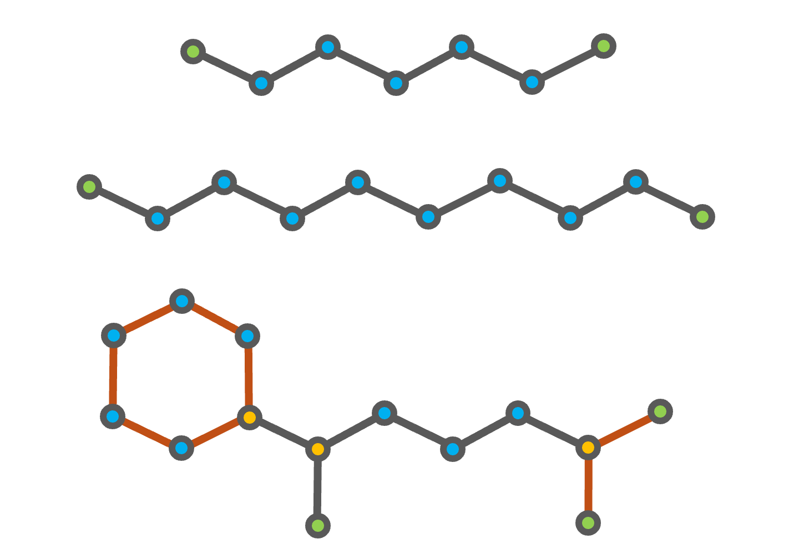

Introduction and Basic Usage
FuelLib is a Python library that uses group contribution methods to estimate the thermophysical properties of multicomponent liquid fuels and their mixtures. This tutorial provides a basic introduction to using FuelLib, including installation, required input files, and example usage.
Download and Setup
Install FuelLib using pip:
pip install fuellib
The required dependencies will be installed automatically.
For information about contributing or installation for development, see the Contributing page.
If you want to run the example scripts, you can either clone the repository or download individual tutorial files from the tutorials directory on GitHub.
Required Input Files
FuelLib comes with a variety of built-in fuels with pre-populated input files, but you can also add your own custom fuels by providing the required input files. Each fuel requires two input files:
fuellib/data/fuelData/gcData/<fuel_name>_init.csv: the initial weight percentage composition of the fuel components (must include columns “Compound” and “Weight %”)fuellib/data/fuelData/groupDecompositionData/<fuel_name>.csv: the fundamental group decomposition for each component of the fuel (must have columns for groups in the same order as gcmTable)
These two required files must have the same number of rows and the same order of components. Many examples can be found in the fuellib/data/fuelData directory in the repository. When working with an installed package, prefer fuellib.get_fueldata_dir() to discover the local fuel-data directory instead of hard-coding package paths.
Fuel Metadata
A fuel_metadata.yaml file is required to define decomposition name mappings. This allows you to map multiple fuel variants to a shared group decomposition file. See the Adding Custom Fuels tutorial for details on the metadata file format and structure.
Decomposing Fuel Components into Fundamental Groups
The decomposition process is a manual process that requires knowledge of the chemical structure of each component in the fuel. For example, consider a multicomponent fuel consisting of heptane (C7H16), decane (C10H22), and (1,5-dimethylhexyl)cyclohexane (C14H28).
{kind=link}

Fig. 4 Chemical structures of heptane (top), decane (middle), and (1,5-dimethylhexyl)cyclohexane (bottom). The CH3 groups are highlighted in green, the CH2 groups in blue, and the CH group in gold. The additional second order structures of (1,5-dimethylhexyl)cyclohexane are shown in orange.
The decomposition of heptane and decane into the groups defined in the gcmTable is straightforward, as both compounds consist of only CH3 and CH2 groups. (1,5-dimethylhexyl)cyclohexane is a branched cycloalkane with a six-membered ring and two methyl branches on the first and fifth carbon atoms of the ring, as shown in the figure above. The six-membered ring and the branch containing the two CH3 groups bonded to a CH group are accounted for using the second order groups defined in the gcmTable. However, the remaining branch with a single CH3 group bonded to a CH2 group is not defined in the gcmTable.
Compound |
CH3 |
CH2 |
CH |
… |
(CH3)2CH |
6 membered ring |
|---|---|---|---|---|---|---|
Heptane |
2 |
5 |
0 |
… |
0 |
0 |
Decane |
2 |
8 |
0 |
… |
0 |
0 |
(1,5-dimethylhexyl)cyclohexane |
3 |
8 |
3 |
… |
1 |
1 |
Note
All group decomposition files must follow the groups defined in gcmTable, there are \(N_{g1} = 78\) first-order groups and \(N_{g2} = 43\) second order groups. The second-order groups start with the branching structure (CH3)2CH. Not all branching structures are defined in the gcmTable. We recommend starting with fuellib/data/fuelData/groupDecompositionData/refCompounds.csv and adapting the decompositions and compounds for your fuel.
Basic Usage
To demonstrate the usage of FuelLib, we will use the fuel “heptane-decane”, which is a
binary mixture of heptane and decane. The initial weight percentage composition is 73.75%
heptane and 26.25% decane, and the group decomposition data is provided in the
groupDecompositionData directory.
The following tutorial is included in the FuelLib/tutorials
as basic.py. To begin, we will import the necessary modules and create a fuel object for the two component fuel “heptane-decane”:
import fuellib as fl
# Create a fuel object for the fuel "heptane-decane"
fuel = fl.fuel("heptane-decane")
Upon initialization, the fuel object will read the initial weight
percentage composition and group decomposition data from the specified files. The object stores
vectors of the calculated fundamental properties at standard conditions for each component of the fuel as described in Equations for GCM properties.
For example, we can display the fuel name, the components in the fuel, the initial composition, and the critical temperature for each component:
# Display fuel name, components, initial composition, and critical temperature
print(f"Fuel name: {fuel.name}")
print(f"Fuel components: {fuel.compounds}")
print(f"Initial composition: {fuel.Y_0}")
print(f"Critical temperature: {fuel.Tc} K")
>> Fuel name: heptane-decane
>> Fuel components: ['NC7H16', 'NC10H22']
>> Initial composition: [0.7375 0.2625]
>> Critical temperature: [549.85598051 623.69051582] K
Next, we can calculate any of the component- or mixture-level properties using the
fuel object. For example, we can calculate the saturated vapor pressure
for each component and the mixture at a given temperature:
# Calculate the saturated vapor pressure at 320 K
T = 320 # K
p_sat_i = fuel.psat(T)
p_sat_mix = fuel.mixture_vapor_pressure(T)
print(f"Saturated vapor pressure at {T} K: {p_sat_i} Pa")
print(f"Mixture saturated vapor pressure at {T} K: {p_sat_mix} Pa")
>> Saturated vapor pressure at 320 K: [13735.84605413 673.28876023] Pa
>> Mixture saturated vapor pressure at 320 K: 11117.84926875165 Pa
The following links provide more information on the Equations for individual compound correlations and
the Equations for mixture properties from GCM that can be calculated using the groupContribution object.